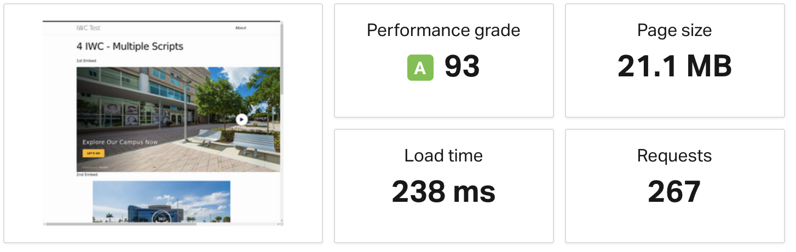
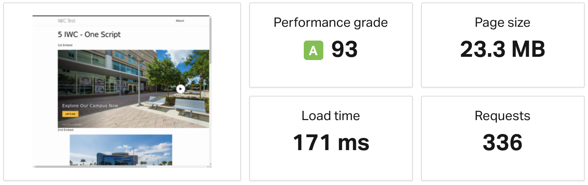

Stats 2 IWC - One Script Stats | Source 3 IWC - One Script Stats | Source 4 IWC - Multiple Scripts  Stats | Source 4 IWC - One Script Stats | Source 5 IWC - One Script  Stats | Source 6 IWC - One Script Stats | Source 12 IWC - One Script Stats | Source 12 IWC - Multiple Scripts Stats | Source